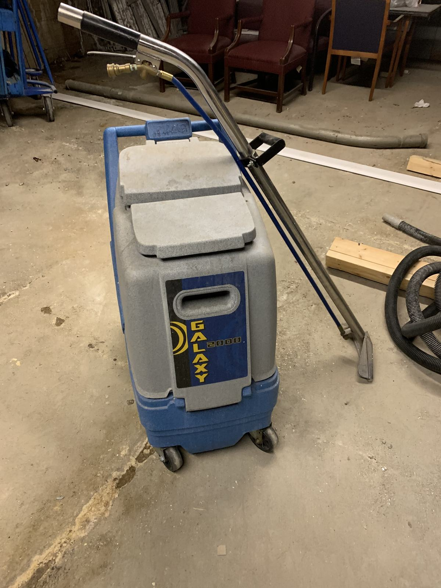

Floor care · Albany & the Capital Region
Commercial floor care — strip, wax, scrub, extract, refinish.
VCT strip and wax, scrub and recoat, burnishing, carpet extraction, tile and grout, and hardwood refinishing. Done at night by our own crew with our own machines.

Every floor type, the right method
Using the wrong method on a floor can ruin it. We identify the surface before we quote, then choose the process.
Which service does your floor need?
Strip & wax
VCT — vinyl composition tile — is the standard hard floor in Capital Region offices, schools and retail, and it's built to be finished. A full strip removes every layer of old, yellowed finish down to the tile. We rinse, neutralize, and lay down multiple fresh coats of commercial finish, each dried before the next, then burnish. It's the reset button for a floor that's dull, patchy or dark along the walls.
Scrub & recoat
When the base finish is sound but the top is worn, we machine-scrub off the damaged top layers and add fresh coats. It costs less and takes less time than a full strip, and done on schedule it pushes the next strip out.
Burnishing
High-speed burnishing polishes the existing finish back to a gloss. In lobbies and corridors it's the regular maintenance between recoats, and it's what keeps a floor looking freshly done.
Carpet extraction
Hot-water extraction flushes embedded soil out of the carpet fiber instead of just pulling surface dirt. We pre-treat traffic lanes and spots, extract, and set fans so the carpet dries quickly. We extract office carpet, apartment corridors and individual units during turnovers.
Tile, grout & LVT
Ceramic and quarry tile in restrooms, kitchens and entries get machine-scrubbed so the grout lines come clean — something a mop never does. LVT and LVP get pH-neutral cleaning and, where the manufacturer allows, a compatible protective finish rather than a strip.
Hardwood refinishing
Worn hardwood gets sanded to bare wood and refinished, or screened and recoated if the wear is only in the finish. It's common during apartment turns and renovations, and it's the same crew that handles the rest of the unit.
How often floors need attention
There's no single right schedule. It depends on traffic, grit tracked in from outside, and how the floor looks to the people who use it. Albany winters matter: salt and sand tracked through entries from November to March wear finish much faster than summer traffic, so many clients add burnishing or a recoat in late winter and plan the full strip for summer.
A typical program pairs regular burnishing in high-traffic areas with periodic scrub and recoats and a full strip and wax when the finish can't be restored any other way. Carpet extraction runs more often in entries and corridors than in private offices. We look at your floors, ask how the building is used, and write a floor calendar that keeps them sharp without over-servicing.
Floor care can run on its own or as part of a janitorial program — the nightly crew keeps the floor clean, and the floor crew keeps the finish right.
Before a strip or refinish, it helps to know what we need from you: a clear night or weekend with no foot traffic in the work area, working water and power, and small items off the floor. We handle moving desks and furniture, protecting walls and baseboards, and putting everything back. After a fresh finish, we'll tell you when the floor can take normal traffic and when it can take carts and heavy equipment.
From our own job sites




From walkthrough to dry floor
Assess
We identify the floor type and condition, measure the area, and note traffic, furniture and access.
Schedule
A written quote and a night or weekend slot that fits your hours. COI before we arrive.
Prep & protect
Furniture moved, walls and baseboards protected, and areas coned off.
Finish & hand back
The work is done, checked and dried, and furniture is back in place before you open.
Offices, schools, retail, student housing
Our floor crews work in office buildings, schools, retail stores, warehouses, medical offices and apartment buildings across Albany, Troy, Schenectady, Saratoga Springs and Clifton Park. For student-housing operators, floor care is part of the turn: carpet extraction and hardwood refinishing in hundreds of units between leases, handled by the same crew that runs the student turnover — the crew that has turned 5,000+ units to date.
Floor care across the Capital Region:
Floor care questions, answered
Can you strip and wax floors after hours?
Yes. Floor work is scheduled after hours, overnight or on weekends so your operations aren't disrupted. We plan the job so floors are dry and walkable before your team arrives, and we'll tell you up front if a large area needs to be split across more than one night.
What's the difference between strip and wax, scrub and recoat, and burnishing?
Burnishing is a high-speed polish of the existing finish. Scrub and recoat removes the top layers of worn finish and adds fresh coats. Strip and wax removes all of the old finish down to the tile and rebuilds it. Regular burnishing and periodic recoats stretch the time between full strips.
Can you strip and wax LVT or luxury vinyl?
Usually not. Most LVT and LVP have a factory wear layer that aggressive stripping can damage. We clean LVT with pH-neutral products and, where the manufacturer allows it, apply a compatible protective finish. We check the floor type before quoting any job.
Do you clean carpet in apartment buildings?
Yes. We extract carpet in apartment common areas, hallways and individual units, including carpet extraction as part of unit turnovers and move-ins.
Do you refinish hardwood floors?
Yes. We sand and refinish hardwood in apartments and commercial spaces, and screen-and-recoat floors that are worn but not damaged. Refinishing is often done during a unit turnover or renovation.
Get a floor care quote
Tell us the floor type, square footage and what it looks like now. We'll look at it and send a written quote.
- Bonded & insured — W-9 and COI before day one
- Our own crews, not a revolving door of subcontractors
- Procurement team? Get our vendor packet